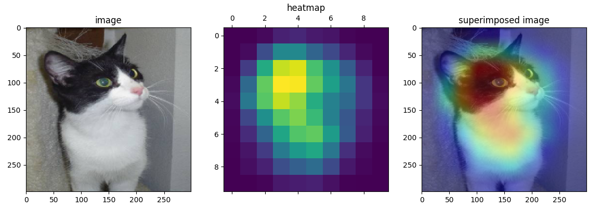
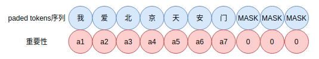
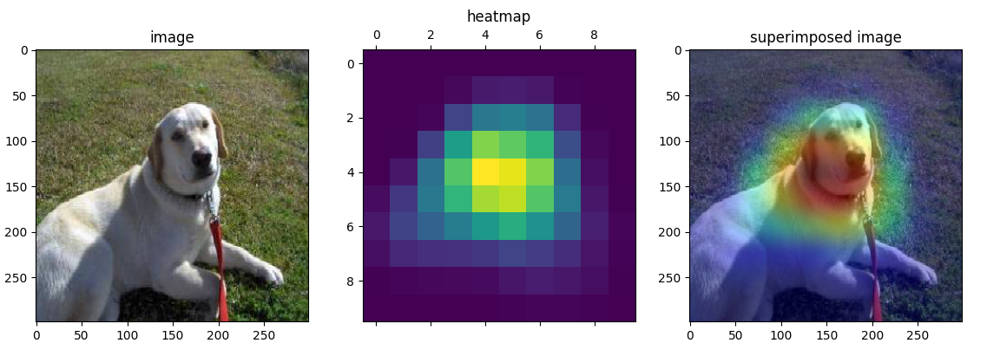
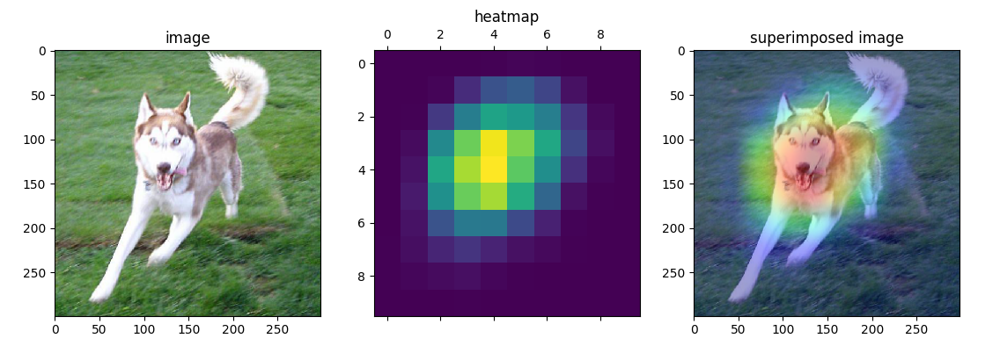

Grad-CAM在NLP可视化中的应用
深度学习是一个”黑盒”系统，为理解其内部的工作原理，可视化充当重要的角色。可视化往往是深度学习模型的“事后解释”的重要工具。Grad-CAM是很好的可视化方法，本篇介绍一下它在NLP中的应用并提供实现。
首先来介绍一下CAM，即类别激活映射图。
CAM
Class Activation Mapping（CAM，可以翻译为类别激活映射图）是CV中可视化技术之一，利用特征的可视化来探究神经网络的类别判断依据、预测输出的贡献度分配及其理解内部组件的工作机制。CAM对于CV分类任务来说，如下图所示，

图一是原始待分类图；图二是基于CAM获得的特征重要性热力图；图像是图一图二的叠加，能够反映不同位置对预测判断的重要性。图三可以看到，对猫的判断主要集中在猫的脸部而非其他背景信息上。
总的来说，CAM有如下作用：
- 便于模型设计者理解模型的工作原理和过程，从中判断模型的决策过程是否符合预期，以便改进模型。
- CAM可视化技术能够加强模型设计者对数据的理解
获取CAM最直接的方式就是对模型最后的CNN层（也就是Pooling层或Dense层前最近的CNN层）的输出，然后对channel维度直接加权平均，然后在resize到模型输入的图像的大小，这样获得的特征图就可以作为输入图像的CAM。在可视化时还需要对特征图处理，如转化为热力图。
类似的做法在NLP中GlobalMaxPooling的可视化理解已经介绍过，不过需要借助GlobalMaxPooling或GlobalAveragePooling。
这种方法不需要涉及梯度计算，因此也称为gradient-free CAM。
Grad-CAM
还有一种别于CAM的方法，基于梯度的CAM，称为Grad-CAM，具体可参看文献Grad-CAM: Visual Explanations from Deep Networks via Gradient-based Localization。理论上Grad-CAM可以提取任意一层特征层，一般我们选择Pooling层上游最近的特征层。Grad-CAM并不需要借助GlobalMaxPooling或GlobalAveragePooling，因此更具有通用性。
对于某一层CNN的输出，其维度是$b \times m \times n \times l$，分别表示批量、长、宽和channel，去掉批量，假设第$k$层CNN的输出为$A_{ij}^k$。类别$c$在softmax前的logit分值为$y^c$，于是
表示每个channel的重要性权重，$\frac{1}{Z} \sum_{i} \sum_{j}$是对长、宽维度的平均。然后就可以对CNN输出加权平均，
然后就可以获得一张热力图。直观可视化如下（图片来源为图片地址），

对于文本类型数据也是类似的处理，不过数据结构化为$b \times n \times l$。下面的实现和演示是把这种技术引入到NLP中。
实验与效果
文本的重要性示意图如下，

文本上的热力图，权重即重要性自上而下从左到右逐渐变大，
这里可视化使用红色系colormap，颜色越深代表权重越大，反之则越小，如下：
下面是文本分类任务的可视化，文字颜色越红越深字权重越大。Grad-CAM的Python实现如下，
1 | def get_grad_cam_weights( |
更详细的实现源码在text-grad-cam-visualization，准备好相应的数据以及修改数据位置参数后，运行
1 | $ python3 model_visualization.py |
然后可视化结果写到results.md，可以通过命令行typora results.md观察结果。Typora可以到 https://typora.io/ 下载安装。
Grad-CAM可视化示例一：
Grad-CAM可视化示例二：
可以看到，Grad-CAM可以凸显关键的内容片段。
文本上的实现和实验效果见text-grad-cam-visualization
图像上的实现和实验效果见image-gradient-cam
可视化示例一：

可视化示例二：
可视化示例三：

可以看到，Grad-CAM在图像上也能凸显关键的区域。
总结
Grad-CAM在文本和图像上的可视化理解均有不错的效果。
参考
[1] Grad-CAM: Visual Explanations from Deep Networks via Gradient-based Localization
[2] https://github.com/allenwind/image-integrated-gradients
[3] http://gradcam.cloudcv.org
转载请包括本文地址：https://allenwind.github.io/blog/13482
更多文章请参考：https://allenwind.github.io/blog/archives/